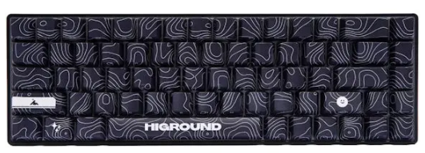

What Makes a Mechanical Keyboard Mechanical?
A mechanical keyboard uses an individual mechanical switch under every key, rather than it being a single rubber membrane sheet. Each switch has its own housing and stem, which gives a mechanical keyboard its signature feel and sound.

How switches work
Pressing a key pushes the switch down into the housing unit, which compresses the metal spring. This action completes an electrical circuit, which tells the computer the key has been pressed. When the key is released, the spring pushes the switch back up to its original position.
Types of switches
There are many switch types available but the most common ones are linear, tactile, and clicky switches. Linear switches move smoothly with no bumps and no clicks; while tactile switches have a small bump when pressed. Finally, clicky switches add an audible loud click along with the same bump seen in tactile switches.